∂DIBR: Differentiable Depth Image-based Rendering for Fast Novel View Synthesis
Abstract
Modern Novel View Synthesis (NVS), such as 3D Gaussian Splatting (3DGS), introduces scene representations based on new parametrized primitives. These primitives are optimized through inverse-rendering optimization from color gradients, possibly with a depth prior. However, they fail to preserve geometric consistency and connectivity of the scene during the training phase. Furthermore, standard computer graphics (CG) pipelines do not easily handle these new primitives, thereby limiting rendering performance and integration into consumer applications. We propose a differentiable framework for Depth Image‑Based Rendering (DIBR) using triangle primitives. Our method integrates seamlessly into traditional CG pipelines while remaining fully optimizable within modern NVS frameworks. Moreover, our primitives ensure geometric consistency and connectivity. Colors and depths are jointly optimized following a coarse-to-fine strategy. We compare our renderer to 3DGS, 2DGS, and Triangle Splatting across two forward‑facing datasets. Although our approach yields slightly lower NVS quality (up to -3 dB), it achieves a 2x speed‑up in rendering time (277 FPS) on a consumer-grade GPU, demonstrating its suitability for real‑time or resource‑constrained applications.
∂DIBR’s differentiable pipeline
(a) From a dataset \(\mathcal{D}\), \(|\mathcal{S}|\) views are selected to represent the scene. (b) A depth map is initialized for each view. (c) ∂DIBR selects \(|\mathcal{I}|\) input views from \(\mathcal{S}\). (d) The input images are warped and blended based on a quality map. During training, the photometric loss (e) is back-propagated. A coarse-to-fine scheme guides the depth optimization.
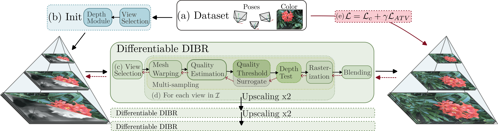
Implementation of Differentiable Rendering
1. Rasterization and Depth test
Approximation techniques for non-differentiable rendering steps. Left: rasterization and depth testing impose hard non-differentiable decisions. Right: multi-sampling is used to provide smooth sampling.
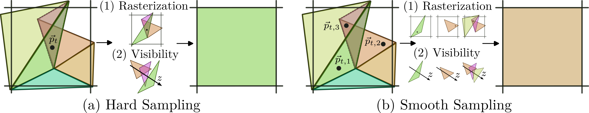
2. Vertex discarding based on disoccluion test
Reformulating disocclusions as a probability based on differentiable computable properties (e.g., triangle elongation) and use of a sigmoid for smooth discarding. More details on page 8.
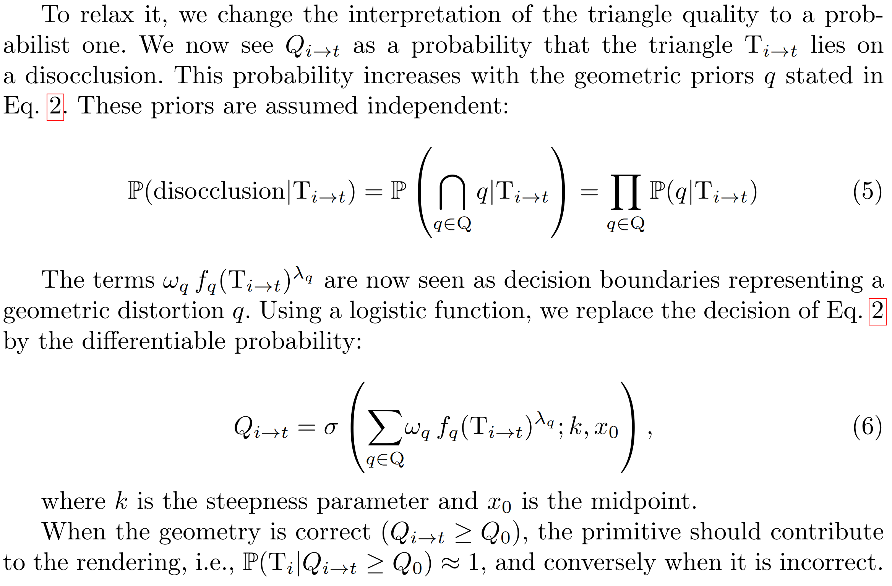
Visual Comparison
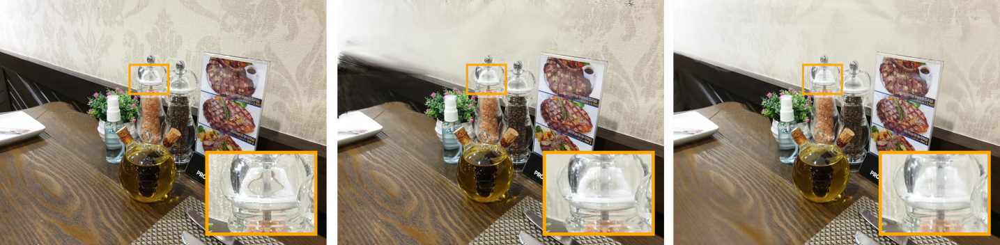
GT 3DGS ∂DIBR
Shiny - Seasoning
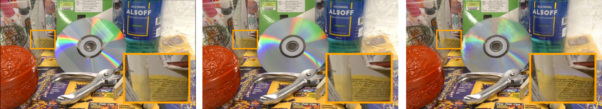
GT 3DGS ∂DIBR
Shiny - CD
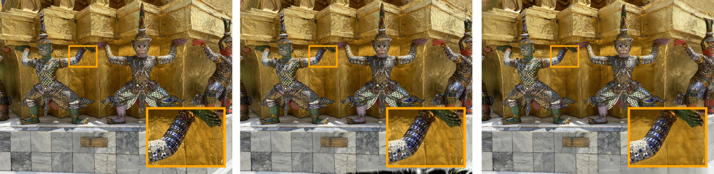
GT 3DGS ∂DIBR
Shiny - Giants
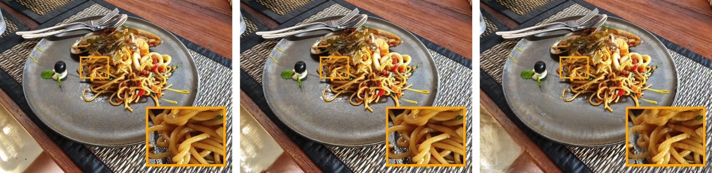
GT 3DGS ∂DIBR
Shiny - Pasta
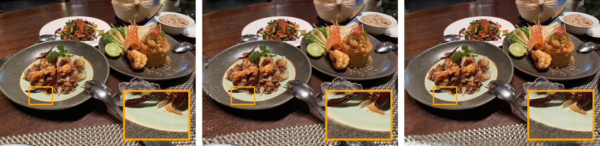
GT 3DGS ∂DIBR
Shiny - Food
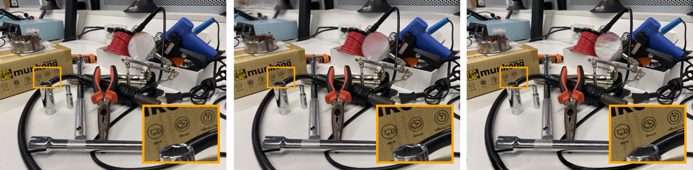
GT 3DGS ∂DIBR
Shiny - Tools
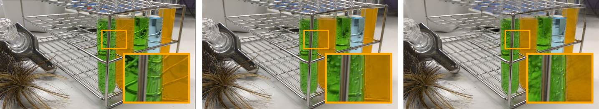
GT 3DGS ∂DIBR
Shiny - Lab
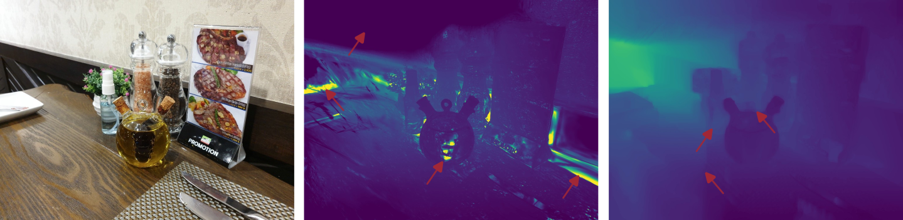
GT 3DGS ∂DIBR
Shiny - Seasoning
Depth failures are illustrated by the red arrows.
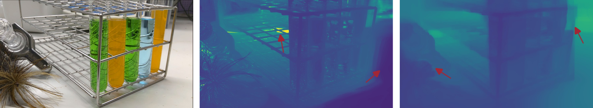
GT 3DGS ∂DIBR
Shiny - Lab
Depth failures are illustrated by the red arrows.
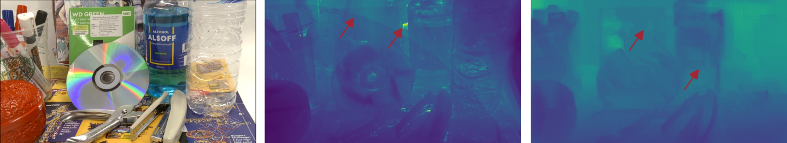
GT 3DGS ∂DIBR
Shiny - CD
Depth failures are illustrated by the red arrows.
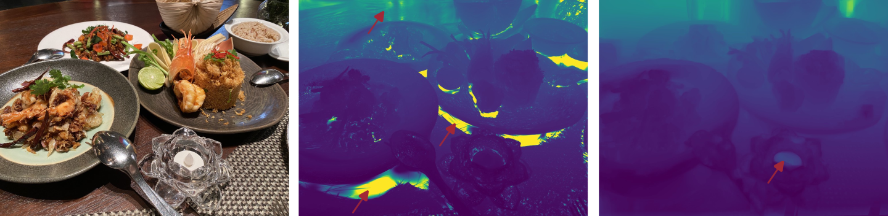
GT 3DGS ∂DIBR
Shiny - Food
Depth failures are illustrated by the red arrows.
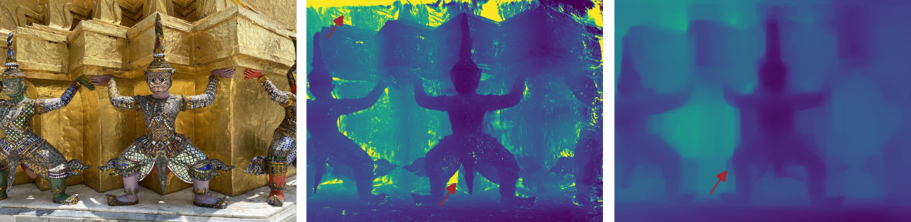
GT 3DGS ∂DIBR
Shiny - Giants
Depth failures are illustrated by the red arrows.
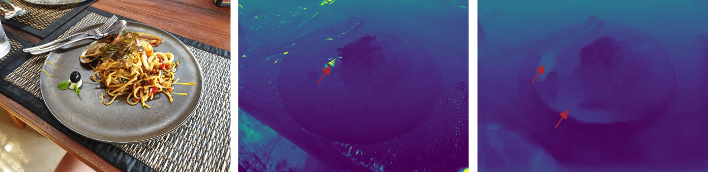
GT 3DGS ∂DIBR
Shiny - Pasta
Depth failures are illustrated by the red arrows.
Acknowledgments
Armand Losfeld is a FRIA grantee and Sarah Dury is a research fellow of the Fonds de la Recherche Scientifique – FNRS, Belgium. This work was supported by the 24 Top-Tier International Global Collaborative Research Program funded by ETRI; the IITP grant funded by the Korean government (MSIT) (RS-2017-II170072); and the Service Public de Wallonie Recherche – Wal4XR by Win4Excellence (2310144), Belgium.
BibTeX
@inbook{ddibr_eccv_2026,
title={$\partial$DIBR: Differentiable Depth Image-based Rendering for Fast Novel View Synthesis},
author={Losfeld, Armand and Dury, Sarah and Lafruit, Gauthier and Teratani, Mehrdad and Bonatto, Daniele},
booktitle={Computer Vision – ECCV 2026},
publisher={Springer Nature},
year={2026},
}